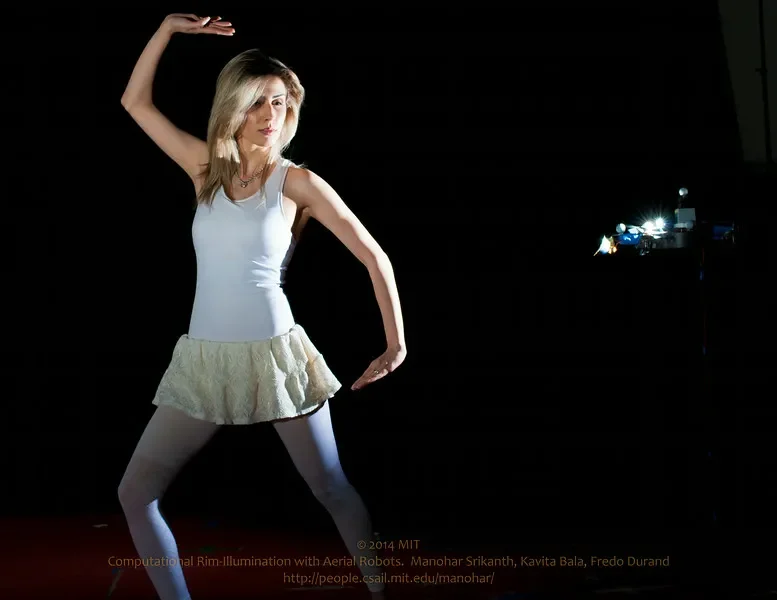
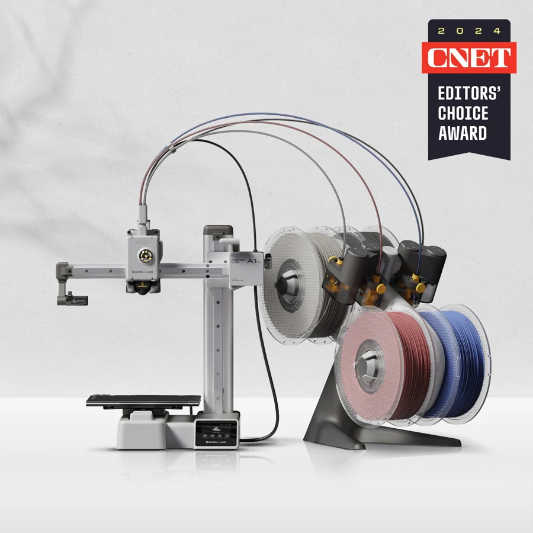
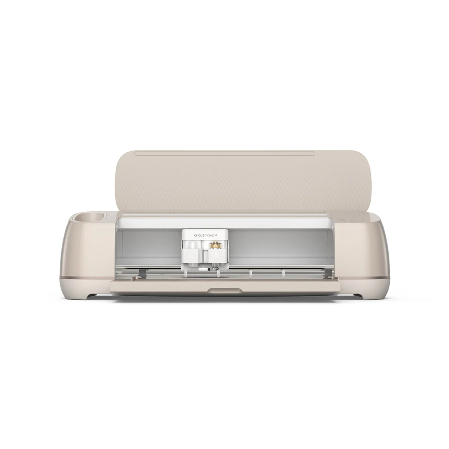
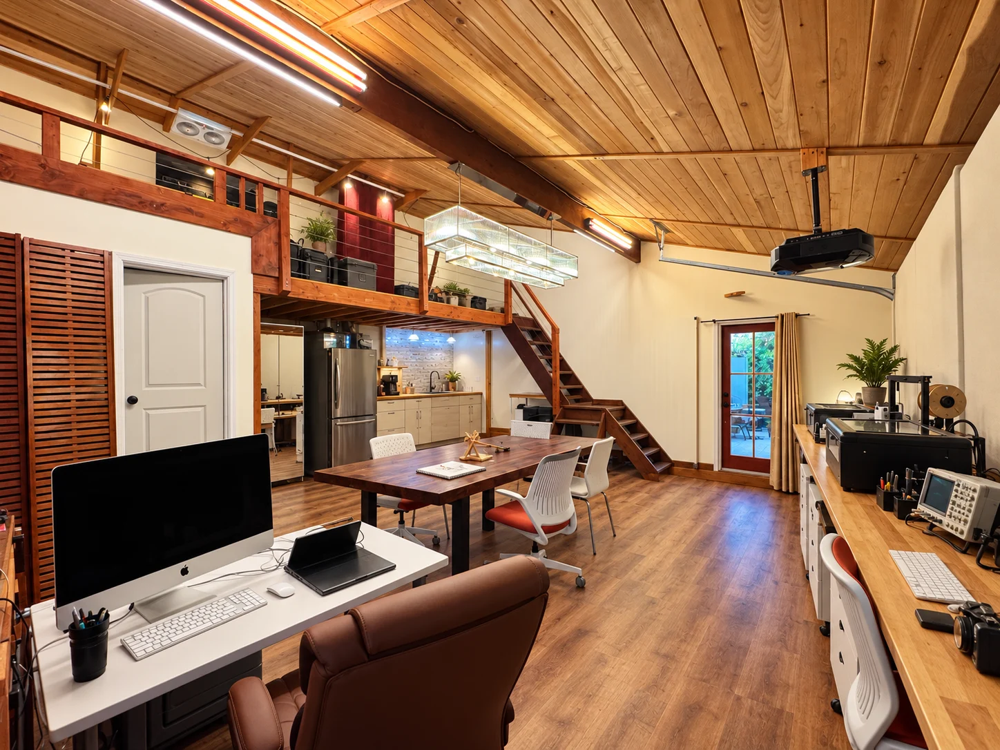

Design · Engineering · Creative exploration
A place to wonder.
A place to make.
A personal design studio where curious minds explore how ideas become things.
Explore the possibilitiesAI architectural concept · Based on the actual studio
An invitation to think with your hands
Some questions deserve
more than an answer.
They deserve a sketch. A measurement. A first attempt that doesn’t quite work—and the chance to try again.
RĀSA Design Studio brings engineering, visual thinking, and hands-on making into one warm, working space. Explore light, build a mechanism, give a circuit a purpose, or turn a drawing into something you can hold.
Ways into discovery
Follow a question.
Different starting points. The same habit of looking closely, making deliberately, and learning from what happens.

Exploration 01
How does it see? ↗
Light, lenses, photography, and the way machines interpret the world.

Exploration 02
How could it work? ↗
Circuits, sensors, code, and the behavior of things we build.

Exploration 03
What could it become? ↗
Drawings, materials, models, and the move from flat patterns to physical form.
The spirit of the studio
Care in the room.
Rigor in the process.
Possibility in the making.

A working atelier
Warm enough to belong.
Serious enough to grow.
Timber overhead. A shared table at the center. Instruments and fabrication tools around the edges. The room can shift from a design conversation to a prototype session or a robotics experiment.
Step insideIdeas have somewhere to go
Learning with a practicing inventor
Meet Mano.
An engineer’s curiosity.
A photographer’s eye.
A mentor’s attention.
Manohar Srikanth brings an MIT Ph.D., experience in camera systems and robotics, and a longstanding photographic practice. Here, that experience becomes a way to help younger learners ask better questions and develop their own ideas.
The person and the approachA studio taking shape
Bring a question.
See where it leads.
We’re shaping the first learning experiences for curious students in grade 5 and above.
Start a conversation